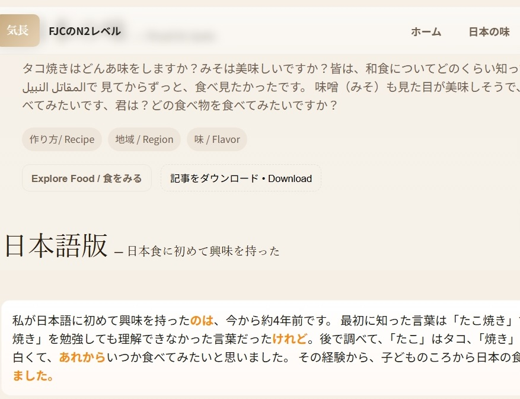
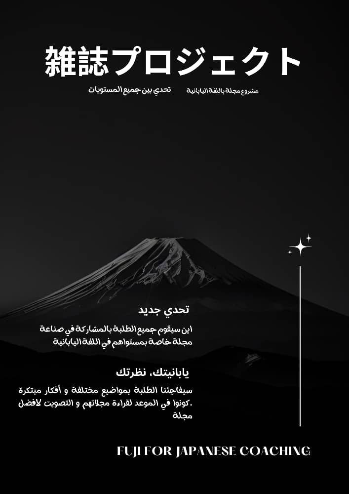
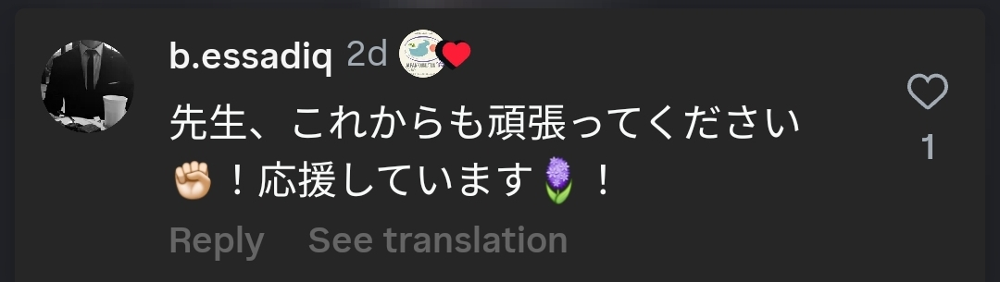
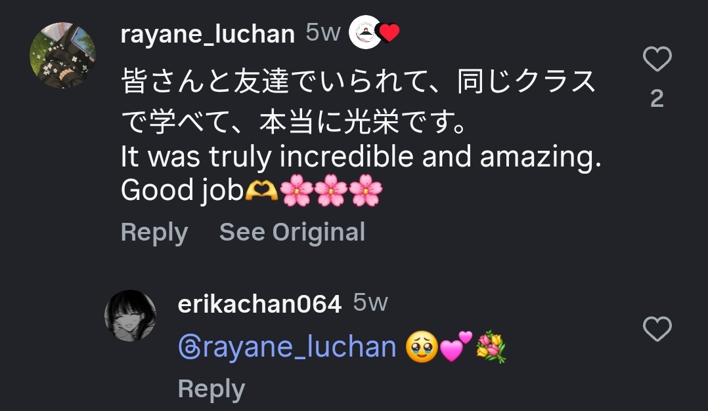
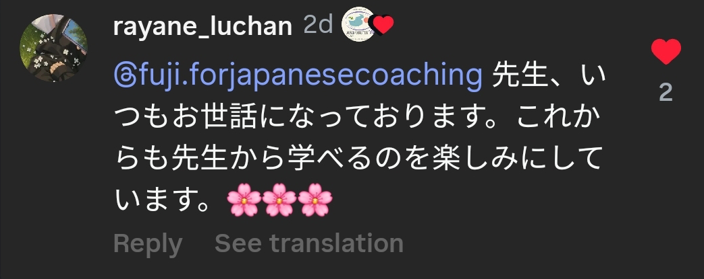
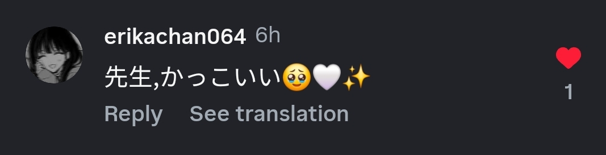

Fuji Japanese Coaching was created to help students learn Japanese in a clear, practical, and motivating way.
Our goal is to make Japanese language learning accessible and enjoyable for everyone — whether you are preparing for the JLPT or simply exploring Japanese culture. With modern teaching techniques and immersive exercises, students quickly build real-world confidence.

📢 نقدم لكم أول مجلة رقمية لطلاب N2! 📰💻هذه المجلة تم تقسيمها إلى أقسام مختلفة، وما أعجبني فيها كثيراً هو أن الطلاب أضافوا ملفات صوتية 🎧! لقد قدم كل طالب نفسه وشرح الجزء الخاص به بطريقة رائعة. تأكدوا من تصفح كل محتوى المجلة وشاركوا رأيكم 👀💬
Visit
المجلة الثانية و التي كانت لطلبة مستوى N3, هاذ المستوى اللي كل الطلبة فيه عندهم حس قيادي و عمل جماعي لا يوصف، الشىء الجميل فالمجلة انو الطالبة ياسمين قامت برسم designs كل طالب دار لمسته الخاصة في الجزء المخصص له
Viewالمجلة الثالثة مجموعة N4 بعد عمل طويل و جهد لا مثيل له، بعد المليون رسالة على الواتساب أشارك معكم عملهم الرائع، مااعجبني في المجلة هو مزيج الثقافة الجزائرية و اليابانية، لاتفوتوا اي صفحة و شاركوناn
Viewو اخيرا مع مدلل البيت 😒 مجموعة N5 🙆 فاجأت المجموعة بعمل جماعي كهذا و لكنهم فاجأوني بعملهم الجماعي و أفكارهم المبتكرة، please support our babies ❤️❤️, and culture.
View


